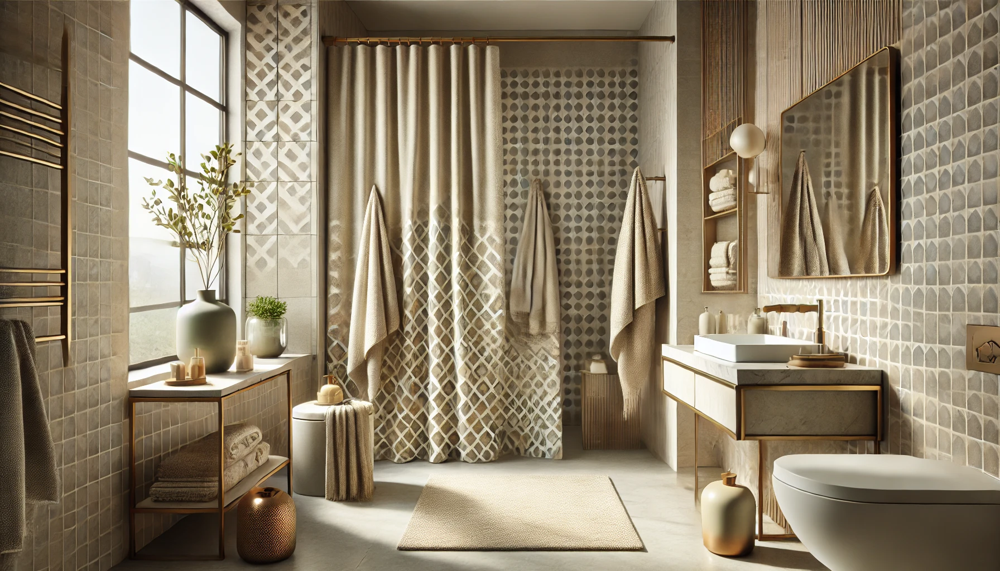

How to Match Your Shower Curtain with Your Bathroom Decor: Complete Style Guide

Home & Bath Product Researcher | Interior Design Enthusiast
Quick Answer: How to Match Shower Curtains with Decor
Use the 60-30-10 color rule: 60% dominant color (walls/tile), 30% secondary (shower curtain/towels), 10% accent (accessories). For a safe starting point, choose a white waffle weave curtain ($15.99) -- it works with every style.

Your shower curtain is the largest fabric surface in your bathroom -- and the single biggest design statement you can make without renovation. A well-chosen curtain ties together tile, paint, towels, and accessories into a cohesive look. A poorly chosen one makes even an expensive bathroom feel disjointed.
Yet matching a shower curtain to bathroom decor confuses even experienced decorators. Should the curtain match the tiles? The towels? The paint? The answer depends on your bathroom style, your tile color, and the mood you want to create. According to the National Kitchen & Bath Association, the shower curtain is the number-one bathroom element that homeowners change to update their decor -- ahead of towels, rugs, and hardware.
In this guide, we break down the exact rules interior designers use to coordinate shower curtains with every bathroom style. Whether your bathroom is hotel-luxury, farmhouse, modern minimalist, or coastal, you will learn the specific curtain type, color, and material that fits. Plus, we recommend 5 versatile shower curtains that work across multiple design styles.
Recommended curtains range from $7.74 to $19.99 -- proof that great bathroom design does not require a big budget.

AmazerBath White Waffle Weave
Textured white waffle weave that complements modern, farmhouse, coastal, and minimalist bathrooms equally well. Heavy-duty fabric with hotel-quality feel.
Check Price on AmazonWhy Your Shower Curtain Is the Key to Bathroom Decor
In most bathrooms, the shower curtain occupies 15-25 square feet of visual space -- more than any single wall, piece of furniture, or accessory. It is the first thing guests notice and the element that sets the entire mood of the room.
The Visual Impact of Shower Curtains
Interior designers call the shower curtain the "anchor piece" of bathroom design. Unlike tile or paint, which require contractors and commitment, a shower curtain can be swapped in minutes for under $20. This makes it the most cost-effective design tool in your bathroom arsenal.
A well-chosen curtain can make a small bathroom feel larger, a dated bathroom feel modern, or a plain bathroom feel styled. Conversely, a mismatched curtain can undermine an otherwise beautiful space. The Better Homes & Gardens design team rates the shower curtain as the single most impactful bathroom change under $50.
Key Design Principles for Shower Curtains
- Complement, do not match: Your curtain should harmonize with your tile and paint, not replicate them exactly. Exact matching looks flat and one-dimensional.
- Texture adds depth: A textured curtain (waffle, linen, or jacquard) adds visual interest even in a single-color bathroom. Flat, smooth curtains look cheap.
- Scale matters: Large patterns work in large bathrooms. Small or no patterns work in small bathrooms. Wrong scale creates visual tension.
- Material signals quality: Fabric curtains (polyester, cotton, linen) look more expensive than plastic ones. For details on materials, see our fabric vs vinyl vs PEVA guide.
- Light and airy wins: Light-colored curtains make bathrooms feel open and clean. Dark curtains work only in large, well-lit spaces.
The 60-30-10 Color Rule for Bathrooms
Professional interior designers use the 60-30-10 rule to create balanced, visually appealing spaces. Here is how to apply it to your bathroom with the shower curtain as the anchor piece.
How the Rule Works
- 60% Dominant Color (walls, tile, floor): This is the background color of your bathroom. In most bathrooms, it is white, beige, or gray.
- 30% Secondary Color (shower curtain, towels, rug): This is where your shower curtain plays its biggest role. It sets the secondary color that towels and rugs echo.
- 10% Accent Color (accessories, hardware, soap dispensers): Small pops of contrast that tie the room together.
Color Matching Cheat Sheet by Tile Color
| Your Tile Color | Best Curtain Colors | Avoid | Accent Suggestions |
|---|---|---|---|
| White | Anything -- white is the most flexible base | Exact same white (looks flat) | Gold, black, navy, sage green |
| Beige/Cream | White, sage green, dusty blue, warm gray | Yellow (clashes), bright orange | Brass, terracotta, natural wood |
| Gray | White, blush pink, navy, mustard yellow | Another shade of gray (too monochrome) | Chrome, black, rose gold |
| Blue | White, sand/beige, coral, light gray | Green (unless coastal), purple | Driftwood, white, brass |
| Black/Dark | White (high contrast), cream, gold, emerald | Dark colors (bathroom feels cave-like) | Gold hardware, white accessories |
| Natural Stone | White, earth tones, linen/cream | Bright neon colors, plastic-looking materials | Bronze, matte black, natural elements |
Pattern Rules: When to Go Bold vs. Neutral
- Plain tile? Go bold with a patterned curtain -- it becomes the focal point
- Patterned tile? Choose a solid or subtly textured curtain to avoid visual overload
- Small bathroom? Stick to vertical stripes or solid colors to create height
- Large bathroom? Large-scale patterns and bold colors work beautifully
Shower Curtain Picks by Bathroom Style
Different bathroom aesthetics call for different curtain choices. Here are our top picks organized by the 5 most popular bathroom styles in 2026, each with a recommended product from our tested catalog.

1. AmazerBath Boho Shower Curtain with Tassels
Best For: Farmhouse, boho, rustic, or eclectic bathrooms
- Faux linen texture with woven tassels
- Green striped pattern on light tan base
- Heavy fabric -- hangs beautifully
- Standard 72x72 size with rustproof hooks
- Machine washable on gentle cycle
Pros
- Tassels add authentic boho texture
- Neutral earth tones match any tile
- Heavy fabric resists billowing
- Hooks included
Cons
- Needs separate waterproof liner
- Tassels need gentle washing
The boho farmhouse look relies on natural textures, earth tones, and handcrafted details. This AmazerBath curtain delivers all three with its faux linen weave and woven tassels. The green stripe on a tan base coordinates beautifully with wood vanities, terracotta pots, and wicker accessories.
Pair it with neutral towels (cream, sand, or sage) and natural-material accessories like a bamboo soap dish or wooden toothbrush holder. Add a jute or cotton bath rug to complete the farmhouse look. You will need a separate shower curtain liner since this is decorative fabric, not waterproof.
Check Price on Amazon
2. AmazerBath White Waffle Weave Shower Curtain
Best For: Modern, minimalist, Scandinavian, and hotel-style bathrooms
- Classic waffle weave texture
- Premium heavy polyester fabric
- Hotel-quality weight and drape
- 72x72 standard size
- Machine washable -- stays bright
Pros
- 25,000+ reviews -- proven favorite
- Works with every color scheme
- Waffle texture prevents "cheap" look
- Under $16
Cons
- White shows mildew faster
- Still needs a liner for waterproofing
Minimalist design follows the principle of "less is more." A white waffle weave curtain embodies this perfectly -- it adds texture and visual weight without color or pattern. This is the curtain you see in boutique hotels and designer bathrooms because it lets the architecture speak while adding warmth through fabric texture.
Pair with matte black or chrome hardware, solid gray or white towels, and geometric accessories. Keep everything in the same tonal family (white/gray/black). For tips on maintaining white curtains, check our cleaning guide. For broader hotel inspiration, see our hotel-style curtain roundup.
Check Price on Amazon
3. Naturoom Natural Linen Shower Curtain
Best For: Coastal, Scandinavian, organic, and natural-themed bathrooms
- Natural linen-look fabric
- Cream/beige color -- warm and inviting
- Weighted bottom hem -- hangs straight
- Textured weave adds visual depth
- 72 inch standard size
Pros
- Natural look at synthetic price
- Weighted hem prevents billowing
- Cream tone warms up cool-toned tiles
Cons
- Not waterproof -- liner needed
- Cream may yellow over time
Coastal and nature-inspired bathrooms lean on organic textures, soft neutrals, and materials that evoke the beach or countryside. This Naturoom curtain achieves that aesthetic perfectly with its natural linen look and warm cream tone. It softens the hard surfaces of tile and porcelain while adding the visual warmth that coastal style demands.
Pair with blue or teal towels, driftwood accessories, and glass jars for a beach-house vibe. For a Scandinavian take, combine with light birch wood elements and white ceramics. The weighted bottom hem is a practical bonus -- it keeps the curtain hanging straight instead of blowing inward during showers.
Check Price on Amazon
4. ALYVIA SPRING Waterproof Fabric Curtain
Best For: Classic, traditional, rental, and all-white bathrooms
- Soft fabric with waterproof coating
- Built-in 3 magnets -- no liner needed
- Hotel-quality white polyester
- Machine washable and lightweight
- 72x72 standard size
Pros
- 57,000+ positive reviews
- Waterproof -- no separate liner needed
- Under $10 -- incredible value
- Magnets keep curtain in place
Cons
- Less texture than waffle weave
- Thinner than premium options
For traditional bathrooms and rental apartments where you want a clean, polished look without investing in a separate liner, ALYVIA SPRING is the smart choice. Its built-in waterproof coating eliminates the double-curtain look that some people find cluttered, and the magnetic weights keep the bottom hem flush against the tub.
This is also the go-to for rental properties and guest bathrooms where a simple, clean curtain is all you need. It coordinates with any decor because white fabric is the ultimate neutral. Pair with waterproof accessories to maintain the streamlined look.
Check Price on Amazon
5. Amazon Basics White Shower Curtain
Best For: First apartments, budget refreshes, liner use, seasonal changes
- Water-resistant fabric with grommets
- Rustproof metal hooks included
- Machine washable for easy care
- 72x72 standard size
- Wrinkle-resistant material
Pros
- Under $8 -- cheapest quality option
- 45,000+ happy reviews
- Hooks included in the box
Cons
- Thinner fabric than premium picks
- Less texture than waffle weave
At $7.74, the Amazon Basics curtain proves that stylish bathroom design does not require expensive materials. It is the perfect "foundation" curtain for anyone figuring out their bathroom style -- buy it, see how white works in your space, then upgrade to a textured version once you know your direction.
This is also ideal for seasonal rotation: buy two or three different curtains and swap them every few months for a zero-renovation bathroom refresh. For measuring help, see our curtain size guide.
Check Price on AmazonStyle Compatibility Matrix: Which Curtain Fits Your Bathroom
This custom matrix shows at a glance which curtain works with which style. Use it to narrow down your choice based on your bathroom's existing aesthetic.
| Curtain | Price | Modern | Farmhouse | Coastal | Traditional | Boho |
|---|---|---|---|---|---|---|
| AmazerBath Boho Tassel | $19.99 | Fair | Excellent | Good | Fair | Excellent |
| AmazerBath Waffle Weave | $15.99 | Excellent | Good | Excellent | Good | Good |
| Naturoom Linen | $14.98 | Good | Excellent | Excellent | Fair | Good |
| ALYVIA SPRING | $9.98 | Good | Fair | Good | Excellent | Fair |
| Amazon Basics | $7.74 | Good | Fair | Good | Good | Fair |
Buying Guide: Fabric, Pattern & Color Tips
Choosing the right shower curtain for your decor comes down to three decisions: fabric type, color/pattern, and functional needs.
Fabric Type by Style
Different fabrics create different moods. For a complete material breakdown, see our cotton vs polyester comparison.
- Waffle weave polyester: Modern, clean, hotel-like. The most versatile fabric for any bathroom.
- Linen or linen-look: Natural, relaxed, organic. Best for farmhouse, coastal, and Scandinavian styles.
- Cotton: Classic, soft, traditional. Needs a waterproof liner underneath.
- PEVA/vinyl: Functional, waterproof, budget-friendly. Best for kids' bathrooms or as liners. See our PEVA liner guide.
Color Selection Strategy
The safest approach to color selection depends on how bold you want to go:
- Safe (100% works): White or cream curtain + colored towels and accessories
- Moderate: Neutral curtain (gray, beige, sage) that echoes one existing element
- Bold: Patterned curtain that becomes the room's focal point (only if tile and walls are plain)
Functional Considerations
- Liner needed? Most decorative fabric curtains need a waterproof liner. Budget curtains with built-in water resistance (like ALYVIA SPRING) eliminate this extra cost.
- Mildew prone? In humid bathrooms with poor ventilation, choose mildew-resistant materials or a PEVA liner.
- Small bathroom? Light colors and vertical patterns create visual height. Avoid horizontal stripes. For more tips, see our small bathroom curtain guide.
How to Keep Your Shower Curtain Looking Fresh
Even the best-matched shower curtain loses its design impact if it looks dirty or faded. Proper care extends both the life and the look of your curtain.
Weekly Maintenance
- Spread the curtain fully after each shower to maximize air circulation
- Wipe down the bottom hem where moisture collects
- Open the bathroom window or run the exhaust fan for 15 minutes post-shower
Monthly Deep Cleaning
- Machine wash on cold with mild detergent -- no bleach on colored curtains
- Add 1/2 cup baking soda during the wash cycle to brighten whites
- Hang dry (never tumble dry fabric curtains at high heat)
- For detailed instructions by material type, see our complete cleaning guide
Signs It Is Time to Replace
- Permanent mildew stains that survive cleaning
- Faded colors that no longer match your accessories
- Torn grommets or hems from repeated use
- Lingering musty odor after washing
Frequently Asked Questions About Shower Curtain Decor
Q: Should my shower curtain match my bathroom tiles?
Your shower curtain should complement, not exactly match, your tiles. Choose a curtain that picks up one accent color from the tile or provides a deliberate contrast. Exact matching looks dated and one-dimensional. For white tile, any color or pattern works. For colored tile, use the 60-30-10 rule described above.
Q: What color shower curtain makes a small bathroom look bigger?
White, cream, or light gray shower curtains make small bathrooms look bigger by reflecting light and creating visual continuity with white walls and tile. Avoid dark colors or busy patterns in tight spaces. A solid white waffle weave curtain is the safest choice -- it adds texture without visual weight.
Q: Can I mix patterns in my bathroom decor?
Yes, but follow the Rule of Three: vary the scale of patterns. Pair a large-scale shower curtain pattern with medium-scale towel patterns and small-scale accessory patterns. Keep patterns in the same color family for cohesion. Limit to 2-3 patterns maximum to avoid visual chaos.
Q: Should my shower curtain and towels match?
They should coordinate, not match exactly. Pick towels that echo one color from the shower curtain. For a patterned curtain, choose solid towels in the curtain's secondary color. For a solid curtain, patterned towels add visual interest. The key is connection, not replication.
Q: What is the most versatile shower curtain color?
White is the most versatile shower curtain color. It works with every bathroom style, tile color, and accessory scheme. A textured white curtain (like waffle weave or linen) adds visual interest without committing to a specific decor style. It is also the easiest to replace seasonally.
Q: How often should I change my shower curtain for a decor refresh?
You can refresh your bathroom look by changing the shower curtain every 6-12 months, or with the seasons. Since quality curtains cost $10-25, it is one of the most affordable ways to update your bathroom decor without renovation. Keep 2-3 curtains on rotation for variety.
Final Verdict: Best Shower Curtain for Every Bathroom Style
After analyzing color theory, testing fabric textures, and consulting interior design principles, here are our definitive recommendations:
- Best Overall / Most Versatile: AmazerBath White Waffle Weave -- Works with modern, coastal, farmhouse, and traditional styles. The safest bet for any bathroom.
- Best for Farmhouse/Boho: AmazerBath Boho Tassel Curtain -- Natural textures and earth tones that define the farmhouse aesthetic.
- Best for Coastal/Natural: Naturoom Natural Linen -- Warm cream tones and linen texture that evoke beachside living.
- Best Budget / Starter: Amazon Basics White -- Under $8, works everywhere, perfect for testing before committing to a style.
The bottom line: your shower curtain is the cheapest, fastest way to transform your bathroom's personality. Start with a white textured curtain if you are unsure, then graduate to colored or patterned options once you have defined your bathroom's style direction.
Remember the 60-30-10 rule, choose texture over flat fabric, and never match your curtain exactly to your tiles. With these principles and the products above, you can create a bathroom that looks professionally designed -- for under $20.